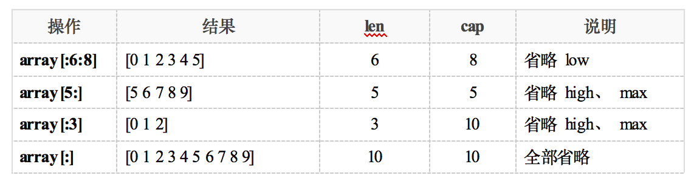

1. 切片简述
- 数组的长度在定义之后无法再次修改；数组是值类型，每次传递都将产生一份副本。显然这种数据结构无法完全满足开发者的真实需求。Go语言提供了数组切片（slice）来弥补数组的不足。
- Slice（切片）代表变长的序列，序列中每个元素都有相同的类型。一个slice类型一般写作[]T，其中T代表slice中元素的类型；slice的语法和数组很像，只是没有固定长度而已。
数组和slice之间有着紧密的联系。一个slice是一个轻量级的数据结构，提供了访问数组子序列（或者全部）元素的功能，而且slice的底层确实引用一个数组对象。一个slice由三个部分构成：指针、长度和容量。指针指向第一个slice元素对应的底层数组元素的地址，要注意的是slice的第一个元素并不一定就是数组的第一个元素。
切片并不是数组或数组指针，它通过内部指针和相关属性引⽤数组⽚段，以实现变⻓⽅案。
slice并不是真正意义上的动态数组，而是一个引用类型。slice总是指向一个底层array，slice的声明也可以像array一样，只是不需要长度。

2. 创建切片
自动推导类型创建
slice s1 := [] int {1, 2, 3, 4}创建 有 4 个元素的切片，分别为：1234
借助make创建 slice，格式：make(切片类型，长度，容量)
s2 := make([]int, 5, 10)len(s2) = 5, cap(s2) = 10
make时，没有指定容量，那么 长度==容量
s3 := make([]int, 5) len(s3) = 5, cap(s3) = 5
注意：make只能创建slice、map和channel，并且返回一个有初始值(非零)的对象。
3. 切片操作
| 操作 | 含义 |
|---|---|
| s[n] | 切片s中索引位置为n的项 |
| s[:] | 从切片s的索引位置0到len(s)-1处所获得的切片 |
| s[low:] | 从切片s的索引位置low到len(s)-1处所获得的切片 |
| s[:high] | 从切片s的索引位置0到high处所获得的切片，len=high |
| s[low:high] | 从切片s的索引位置low到high处所获得的切片，len=high-low |
| s[low : high : max] | 从切片s的索引位置low到high处所获得的切片，len=high-low，cap=max-low |
| len(s) | 切片s的长度，总是<=cap(s) |
| cap(s) | 切片s的容量，总是>=len(s) |
截取可表示为s[low：high：max]。low：表示下标的起点。 high：表示下标的终点（左闭右开，不包括此下标）。 长度 len = high – low。容量 cap = max – low。长度对应slice中元素的数目；长度不能超过容量，容量一般是从slice的开始位置到底层数据的结尾位置。内置的len()和cap() 函数分别返回slice的长度和容量。
示例说明：
array := []int{0, 1, 2, 3, 4, 5, 6, 7, 8, 9}

切片和底层数组关系
func main() {
arr := [] int {0, 1, 2, 3, 4, 5, 6, 7, 8, 9}
s1 := arr[2:5] // 从arr[2]开始，取 5-2 个元素，组成切片s1。
fmt.Println("s1=", s1) // s1= [2 3 4]
s1[1] = 666 // 这样将arr数组中 3 --> 666。
fmt.Println("arr=", arr) // arr= [0 1 2 666 4 5 6 7 8 9]
s2 := s1[2:7] // 从s1[2]开始， 取 7-2 个元素，组成 s2。
fmt.Println("s2=", s2) // 实际上还是取的 数组arr。 s2= [4 5 6 7 8]
s2[2] = 777 // 这会将arr中的 6 --> 777
fmt.Println("arr=", arr) // arr= [0 1 2 666 4 5 777 7 8 9]
}
利用数组创建切片。切片在操作过程中，是直接操作原数组。切片是数组的引用！因此，在go语言中，我们常常使用切片代替数组。
4. 切片做函数参数
切片作为函数参数时，传引用。
func testFunc(s []int) { // 切片做函数参数
s[0] = -1 // 直接修改 main中的 slice
}
func main() {
slice := []int{0, 1, 2, 3, 4, 5, 6, 7, 8, 9}
fmt.Println(slice)
testFunc(slice) // 传引用
fmt.Println(slice)
}
5. 常用操作函数
5.1. append函数
append() 函数可以向 slice 尾部添加数据，可以自动为切片扩容。常常会返回新的 slice 对象：
var s1 []int //创建nil切片，或者：s1 := make([]int, 0)
s1 = append(s1, 1) //追加1个元素
s1 = append(s1, 2, 3) //追加2个元素
s1 = append(s1, 4, 5, 6) //追加3个元素
fmt.Println(s1) //[1 2 3 4 5 6]
s2 := make([]int, 5)
s2 = append(s2, 6)
fmt.Println(s2) //[0 0 0 0 0 6]
s3 := []int{1, 2, 3}
s3 = append(s3, 4, 5)
fmt.Println(s3) //[1 2 3 4 5]
append函数会智能的将底层数组的容量增长，一旦超过原底层数组容量，通常以2倍（1024以下）容量重新分配底层数组，并复制原来的数据。因此，使用append 给切片做扩充时，切片的地址可能发生变化。但，数据都被重新保存了，不影响使用。
func main() {
s := make([]int, 0, 1)
c := cap(s)
for i := 0; i < 100; i++ {
s = append(s, i)
if n := cap(s); n > c {
fmt.Printf("cap: %d -> %d\n", c, n)
c = n
}
}
}
输出结果如下：
cap: 1 -> 2
cap: 2 -> 4
cap: 4 -> 8
cap: 8 -> 16
cap: 16 -> 32
cap: 32 -> 64
cap: 64 -> 128
5.2. copy函数
函数 copy 在两个 slice 间复制数据，复制⻓度以 len 小的为准，两个 slice 指向同⼀底层数组。直接对应位置覆盖。
data := [...]int{0, 1, 2, 3, 4, 5, 6, 7, 8, 9}
s1 := data[8:] //{8, 9}
s2 := data[:5] //{0, 1, 2, 3, 4}
copy(s2, s1) // dst:s2, src:s1
fmt.Println(s2) //[8 9 2 3 4]
fmt.Println(data) //[8 9 2 3 4 5 6 7 8 9]
6. 练习
6.1. 练习1：
给定一个字符串列表，在原有slice上返回不包含空字符串的列表， 如：
{"red", "", "black", "", "", "pink", "blue"}
——> {"red", "black", "pink", "blue"}
6.2. 练习2：
写一个函数，消除[]string中重复字符串，如：
{"red", "black", "red", "pink", "blue", "pink", "blue"}
——> {"red", "black", "pink", "blue"}
6.3. 练习3：
要删除slice中间的某个元素并保存原有的元素顺序， 如：
{5, 6, 7, 8, 9} ——> {5, 6, 8, 9}
7. 练习答案：
7.1. 答案1
package main
import "fmt"
func main() {
strs:= []string{"red", "", "black", "", "", "pink", "blue"}
outStrs:=deleteEmptyString(strs)
fmt.Println(outStrs)
}
func deleteEmptyString(strs []string)[]string {
outStrs:=make([]string,0)
for _,v:=range strs{
if v!="" {
outStrs = append(outStrs,v)
}
}
return outStrs
}
7.2. 答案2
package main
import "fmt"
//map _,ok:= m[V]
func main() {
srcArr:=[]string{"red", "black", "red", "pink", "blue", "pink", "blue"}
dst:=deleteRepeatElement(srcArr)
fmt.Println(dst)
dst2:=deleteEmptyStringByMap(srcArr)
fmt.Println(dst2)
}
func deleteEmptyStringByMap(src []string)(dst []string) {
m:=make(map[string]int)
for _,v:= range src{
m[v]=0
}
for k:=range m{
dst= append(dst,k)
}
return
}
func deleteRepeatElement(src []string)(dst[]string) {
for _,v:=range src{
flag:=false
//先判断输出的slice里面有没有
for _,str:=range dst{
//设置一个flag
if str==v {
flag=true
}
}
//没有就append
if !flag {
dst = append(dst,v)
}
}
return
}
7.3. 答案3
第一种：
//切片不能通过 = 互相赋值
func main() {
src:=[]int{5, 6, 7, 8, 9}
outSlice:=deleteElementByPosition(src,2)
fmt.Println(outSlice)
}
func deleteElementByPosition(src []int,index int)[]int {
copy(src[index:],src[index+1:])//两个切片之间互相赋值要用copy
return src[:len(src)-1]
}
第二种：
//利用append 的第二个不定长参数
func main() {
arr := []int{5, 6, 7, 8, 9}
outSlice := deleteElementAppend(arr, 2)
fmt.Println(outSlice)
}
func deleteElementAppend(src []int, i int) []int {
return append(src[:i], src[i+1:]...)//append第二个形参时不定长参数
}
第三种：
/*
目标元素用末尾元素替换
*/
func main() {
arr:=[]int{5, 6, 7, 8, 9}
outSlice:=deleteElementByPositionNoOrder(arr,2)
fmt.Println(outSlice)
}
func deleteElementByPositionNoOrder(src []int,index int)[]int {
src[index]=src[len(src)-1]
return src[:len(src)-1]
}
8. 拓展
8.1. 切片作为函数参数如何传值？
只有同时保证两个切片的，第一个元素的地址，len，cap完全相同，二者才是同一个切片，也就是说函数内操作切片才可以修改外边的切片的值。
func main() {
arr1 := []int{1, 2, 3, 4, 5, 6}
arr2 := []int{1, 2, 3, 4, 5, 6}
arr3 := []int{1, 2, 3, 4, 5, 6}
arr4 := []int{1, 2, 3, 4, 5, 6}
arr5 := []int{1, 2, 3, 4, 5, 6}
//删除
Delete(arr1)
fmt.Println("删除", arr1) //[1 2 3 4 5 6]
//修改
Modify(arr2)
fmt.Println("修改", arr2) //[0 2 3 4 5 6]
//追加
Append(arr3)
fmt.Println("追加", arr3) //[1 2 3 4 5 6]
//先删除第一个再追加
DeleteFirstThenAppend(arr4)
fmt.Println("先删除第一个再追加", arr4) //[1 2 3 4 5 6]
//先删除非第一个再追加
DeleteNotFirstThenAppend(arr5)
fmt.Println("先删除非第一个再追加", arr5) //[1 2 3 4 5 10]
}
func DeleteNotFirstThenAppend(arr []int){
arr = arr[:len(arr)-1]
arr = append(arr, 10)
}
func DeleteFirstThenAppend(arr []int) {
arr = arr[1:]
arr = append(arr, 20)
}
func Append(arr []int) {
arr = append(arr, 10)
}
func Modify(arr []int) {
arr[0] = 0
}
func Delete(arr []int) {
arr = arr[:len(arr)-1]
}
8.2. 深入理解切片和底层数组的关系
/*
一个切片由指针（首元素），长度，容量 组成
截取的时候左闭右开
s[low:high:max]
len = high-low
cap = max-low
*/
func main() {
s := []int{1, 2, 3, 4, 5, 6}
s1 := s[:3]
fmt.Println(s1) //[1 2 3]
fmt.Println(cap(s1)) //6
s2 := s1[:4] //根据首元素的地址找到底层数组的起始位置，向后截取
fmt.Println(s2) //[1 2 3 4]
//s3:= s1[4] //error 下标 可能是根据s1长度遍历取出来的
//fmt.Println(s3)
s11 := s[3:4]
fmt.Println(s11) //[4]
fmt.Println(cap(s11)) //3 由于没有指定s1的cap，那么cap就为s1的首元素到原切片末尾的长度
}
8.3. 创建切片的第四种方式：
/*
可以指定索引去初始化
*/
func main() {
//0 make 只能创建slice map channel
slice0 := make([]int, 5, 5)
//1 如果不指定那么容量等于长度
slice1 := make([]int, 5)
//2
slice2 := []int{1, 2, 3, 4}
//3
slice3 := []string{1: "一月", 2: "二月"}
fmt.Println(len(slice3)) //3
fmt.Println(slice0, slice1, slice2, slice3) //[0 0 0 0 0] [0 0 0 0 0] [1 2 3 4] [ 一月 二月]
}
8.4. append第二个参数可以是切片吗？
func main() {
//1
ss := make([]int, 0)
s := make([][]int, 0)
ss = append(ss, 1)
s = append(s, ss)
fmt.Println(s)
//2
c:=[]int{1}
cc:=make([]int,0)
cc = append(cc,c...)
fmt.Println(cc)
}
8.5. 切片可以互相比较吗？
//1，数组，结构体之间可以 互相比较 ，map不可以互相比较
//2，slice 之间不能互相比较，只能和nil 比较。结构体包含了map或slice也不可以比较
//slice can only be compared to nil
//原因：一个 slice 的元素是间接引用的，一个 slice甚至可以包含自身。虽然有很多办法处理这种情形，但是没有一个是简单有效的。
type stru1 struct {
}
func main() {
arr1 := [3]int{1, 2, 3}
arr2 := [3]int{1, 2, 3}
fmt.Println(arr1 == arr2)//true
st1 := stru1{}
st2 := stru1{}
fmt.Println(st1 == st2) //true
//s1 := make([]int, 10)
//s2 := make([]int, 10)
//s2 = append(s2, 10)
//fmt.Println(s1 == s2) //error slice can only be compared to nil
}
8.6. interface切片的类型如何判断？
// v.(type)
// v.(int)
func main() {
var interfaces []interface{}
interfaces = append(interfaces, 1)
interfaces = append(interfaces, "str")
interfaces = append(interfaces, true)
for _, v := range interfaces {
switch v.(type) {
case string:
fmt.Printf("%T\n", v)
case bool:
fmt.Printf("%T\n", v)
case int:
fmt.Printf("%T\n", v)
}
if _, ok := v.(int); ok {
fmt.Printf("%T\n", v)
}
if _, ok := v.(bool); ok {
fmt.Printf("%T\n", v)
}
if _, ok := v.(string); ok {
fmt.Printf("%T\n", v)
}
}
}
8.7. 结构体切片作为map的值
type player struct {
name string
age int
}
func main() {
allPlayers := make(map[string][]player)
chinaPlayers := make([]player, 0)
chinaPlayers = append(chinaPlayers, player{"uzi", 18})
chinaPlayers = append(chinaPlayers, player{"clearlove7", 27})
koreaPlayers := []player{{"faker", 20}, {"deft", 19}}
allPlayers["China"] = chinaPlayers
allPlayers["Korea"] = koreaPlayers
for k, v := range allPlayers {
fmt.Printf("%s的选手有：\n", k)
for _, play := range v {
fmt.Println(play.name, "年龄为", play.age)
}
}
}